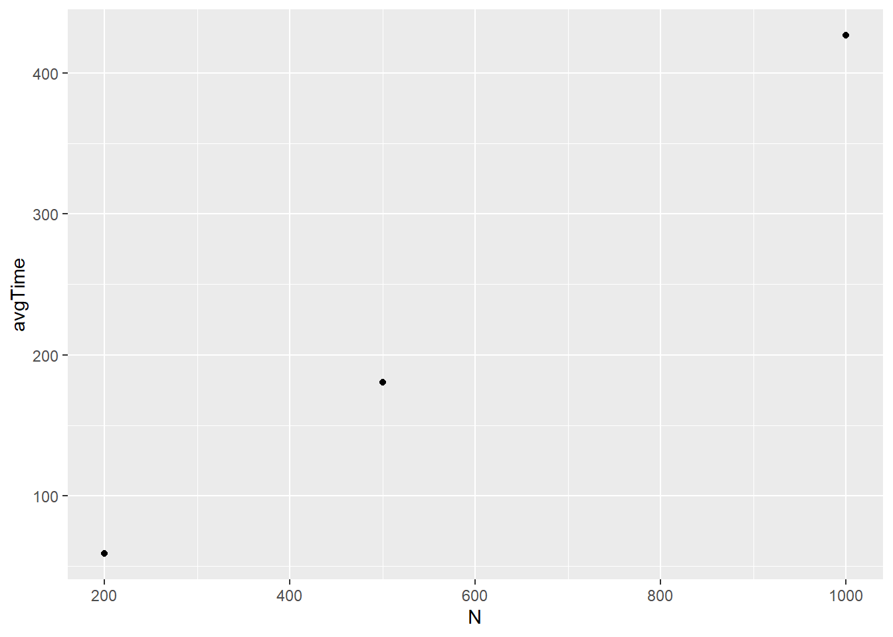
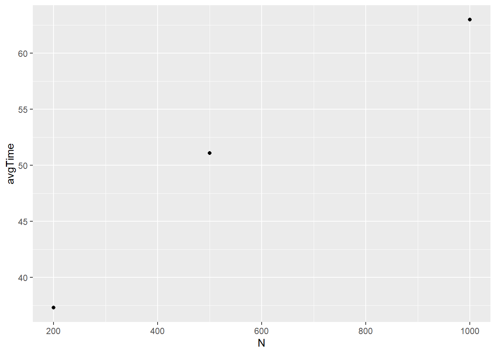

Last updated: 2020-02-19
Checks: 6 1
Knit directory: Code/
This reproducible R Markdown analysis was created with workflowr (version 1.4.0). The Checks tab describes the reproducibility checks that were applied when the results were created. The Past versions tab lists the development history.
Great! Since the R Markdown file has been committed to the Git repository, you know the exact version of the code that produced these results.
Great job! The global environment was empty. Objects defined in the global environment can affect the analysis in your R Markdown file in unknown ways. For reproduciblity it’s best to always run the code in an empty environment.
The command set.seed(20191013) was run prior to running the code in the R Markdown file. Setting a seed ensures that any results that rely on randomness, e.g. subsampling or permutations, are reproducible.
Great job! Recording the operating system, R version, and package versions is critical for reproducibility.
Nice! There were no cached chunks for this analysis, so you can be confident that you successfully produced the results during this run.
Using absolute paths to the files within your workflowr project makes it difficult for you and others to run your code on a different machine. Change the absolute path(s) below to the suggested relative path(s) to make your code more reproducible.
| absolute | relative |
|---|---|
| C:/Users/aclou/Documents/Projects/Thesis/Code/data/all_df_nnf_results_1.csv | data/all_df_nnf_results_1.csv |
| C:/Users/aclou/Documents/Projects/Thesis/Code/data/df_ebmf_results_all_1.csv | data/df_ebmf_results_all_1.csv |
Great! You are using Git for version control. Tracking code development and connecting the code version to the results is critical for reproducibility. The version displayed above was the version of the Git repository at the time these results were generated.
Note that you need to be careful to ensure that all relevant files for the analysis have been committed to Git prior to generating the results (you can use wflow_publish or wflow_git_commit). workflowr only checks the R Markdown file, but you know if there are other scripts or data files that it depends on. Below is the status of the Git repository when the results were generated:
Ignored files:
Ignored: .Rhistory
Ignored: analysis/.Rhistory
Ignored: code/sn_spMF/.Rhistory
Ignored: docs/.Rhistory
Untracked files:
Untracked: analysis/efficiency_analysis_v2.Rmd
Untracked: analysis/efficiency_prep_1.Rmd
Untracked: analysis/efficiency_prep_3.Rmd
Untracked: analysis/misspec_prep.Rmd
Untracked: data/W_sim.txt
Untracked: data/X_sim.txt
Untracked: data/all_df_nnf_results_1.csv
Untracked: data/all_df_nnf_results_mis_1.csv
Untracked: data/df_ebmf_results_all_1.csv
Untracked: data/df_ebmf_results_all_mis_1.csv
Note that any generated files, e.g. HTML, png, CSS, etc., are not included in this status report because it is ok for generated content to have uncommitted changes.
These are the previous versions of the R Markdown and HTML files. If you’ve configured a remote Git repository (see ?wflow_git_remote), click on the hyperlinks in the table below to view them.
| File | Version | Author | Date | Message |
|---|---|---|---|---|
| Rmd | c355ec9 | Adam Sun | 2020-02-19 | analysis looking at efficiency of mf methods across different parameters |
| html | 8014fda | Adam Sun | 2020-02-19 | Build site. |
For following analyses, we assume true number of factors K is known for sn-spmf. Want to compare sn-spmf and ebmf on time/accuracy as increase matrix size and true factors.
Matrices to be tested, key – X1 = 200x20, X2 = 500x20, X3 = 1000x20, X4 = 500x100, X5 = 500x200. K = 5, 10, 25
Warning: package 'penalized' was built under R version 3.5.3Loading required package: survivalWelcome to penalized. For extended examples, see vignette("penalized").Warning: package 'optparse' was built under R version 3.5.3-- Attaching packages ------------------------------------------------------------------ tidyverse 1.2.1 --v ggplot2 3.2.1 v purrr 0.3.2
v tibble 2.1.3 v dplyr 0.8.0.1
v tidyr 0.8.1 v stringr 1.4.0
v readr 1.1.1 v forcats 0.3.0 Warning: package 'ggplot2' was built under R version 3.5.3Warning: package 'tibble' was built under R version 3.5.3Warning: package 'purrr' was built under R version 3.5.3Warning: package 'dplyr' was built under R version 3.5.3Warning: package 'stringr' was built under R version 3.5.3-- Conflicts --------------------------------------------------------------------- tidyverse_conflicts() --
x dplyr::filter() masks stats::filter()
x dplyr::lag() masks stats::lag()Warning: package 'devtools' was built under R version 3.5.3Loading required package: usethisWarning: package 'usethis' was built under R version 3.5.3Warning: package 'NNLM' was built under R version 3.5.3-------------------------------------------------------------------------You have loaded plyr after dplyr - this is likely to cause problems.
If you need functions from both plyr and dplyr, please load plyr first, then dplyr:
library(plyr); library(dplyr)-------------------------------------------------------------------------
Attaching package: 'plyr'The following objects are masked from 'package:dplyr':
arrange, count, desc, failwith, id, mutate, rename, summarise,
summarizeThe following object is masked from 'package:purrr':
compactView(all_df_nnf_results_1)
all_df_nnf_results_1 = all_df_nnf_results_1 %>%
mutate(N = ifelse(Mtx == "X1_K5", 200, ifelse(Mtx == "X3_K5", 1000, 500))) %>%
mutate(P = ifelse(Mtx == "X4_K5", 100, ifelse(Mtx == "X5_K5", 200, 20))) %>%
mutate(K_real = 5)
summ_df_nnf_results_1 = all_df_nnf_results_1 %>%
dplyr::group_by(Mtx, N, P, K_real) %>%
dplyr::summarize(avgTime = mean(Time), avgError = mean(Error)) %>% as.data.frame()
View(df_ebmf_results_all_1)
df_ebmf_results_all_1 = df_ebmf_results_all_1 %>%
mutate(N = ifelse(Mtx == "X1_K5", 200, ifelse(Mtx == "X3_K5", 1000, 500))) %>%
mutate(P = ifelse(Mtx == "X4_K5", 100, ifelse(Mtx == "X5_K5", 200, 20))) %>%
mutate(K_real = 5)
summ_df_ebmf_results_1 = df_ebmf_results_all_1 %>%
dplyr::group_by(Mtx, N, P, K_real) %>%
dplyr::summarize(avgTime = mean(Time_Taken), avgError = mean(RRMSE)) %>% as.data.frame()
summ_df_nnf_results_1 %>%
filter(P == 20) %>%
mutate(next_Time = lead(avgTime, 1)) %>%
mutate(next_N = lead(N, 1)) %>%
mutate(row_mult = round(next_N/N, 3)) %>%
mutate(time_mult = round(next_Time/avgTime, 3)) %>%
kable() | Mtx | N | P | K_real | avgTime | avgError | next_Time | next_N | row_mult | time_mult |
|---|---|---|---|---|---|---|---|---|---|
| X1_K5 | 200 | 20 | 5 | 58.84866 | 0.0906231 | 180.7113 | 500 | 2.5 | 3.071 |
| X2_K5 | 500 | 20 | 5 | 180.71127 | 0.0904115 | 426.6522 | 1000 | 2.0 | 2.361 |
| X3_K5 | 1000 | 20 | 5 | 426.65219 | 0.0878554 | NA | NA | NA | NA |
summ_df_ebmf_results_1 %>%
filter(P == 20) %>%
mutate(next_Time = lead(avgTime, 1)) %>%
mutate(next_N = lead(N, 1)) %>%
mutate(row_mult = round(next_N/N, 3)) %>%
mutate(time_mult = round(next_Time/avgTime, 3)) %>%
kable() | Mtx | N | P | K_real | avgTime | avgError | next_Time | next_N | row_mult | time_mult |
|---|---|---|---|---|---|---|---|---|---|
| X1_K5 | 200 | 20 | 5 | 37.28163 | 0.0927936 | 51.07243 | 500 | 2.5 | 1.370 |
| X2_K5 | 500 | 20 | 5 | 51.07243 | 0.0950183 | 62.98735 | 1000 | 2.0 | 1.233 |
| X3_K5 | 1000 | 20 | 5 | 62.98735 | 0.0899848 | NA | NA | NA | NA |
summ_df_nnf_results_1 %>%
filter(P == 20) %>%
ggplot(aes(N, avgTime)) + geom_point() 
| Version | Author | Date |
|---|---|---|
| 8014fda | Adam Sun | 2020-02-19 |
summ_df_ebmf_results_1 %>%
filter(P == 20) %>%
ggplot(aes(N, avgTime)) + geom_point() 
| Version | Author | Date |
|---|---|---|
| 8014fda | Adam Sun | 2020-02-19 |
df_ebmf_results_all_1 = df_ebmf_results_all_1 %>%
mutate(N = ifelse(Mtx == "X1_K5", 200, ifelse(Mtx == "X3_K5", 1000, 500))) %>%
mutate(P = ifelse(Mtx == "X4_K5", 100, ifelse(Mtx == "X5_K5", 200, 20)))
sessionInfo()R version 3.5.1 (2018-07-02)
Platform: x86_64-w64-mingw32/x64 (64-bit)
Running under: Windows 10 x64 (build 18362)
Matrix products: default
locale:
[1] LC_COLLATE=English_United States.1252
[2] LC_CTYPE=English_United States.1252
[3] LC_MONETARY=English_United States.1252
[4] LC_NUMERIC=C
[5] LC_TIME=English_United States.1252
attached base packages:
[1] stats graphics grDevices utils datasets methods base
other attached packages:
[1] plyr_1.8.4 NNLM_0.4.3 ebnm_0.1-24 devtools_2.2.1
[5] usethis_1.5.0 flashr_0.6-6 forcats_0.3.0 stringr_1.4.0
[9] dplyr_0.8.0.1 purrr_0.3.2 readr_1.1.1 tidyr_0.8.1
[13] tibble_2.1.3 ggplot2_3.2.1 tidyverse_1.2.1 optparse_1.6.4
[17] penalized_0.9-51 survival_2.42-3 knitr_1.20
loaded via a namespace (and not attached):
[1] nlme_3.1-137 fs_1.2.6 lubridate_1.7.4
[4] doParallel_1.0.15 httr_1.3.1 rprojroot_1.3-2
[7] tools_3.5.1 backports_1.1.5 R6_2.4.0
[10] lazyeval_0.2.2 colorspace_1.4-1 withr_2.1.2
[13] tidyselect_0.2.5 prettyunits_1.0.2 processx_3.4.1
[16] compiler_3.5.1 git2r_0.25.2 cli_1.1.0
[19] rvest_0.3.2 xml2_1.2.0 desc_1.2.0
[22] labeling_0.3 scales_1.0.0 SQUAREM_2017.10-1
[25] callr_3.3.2 mixsqp_0.2-2 digest_0.6.21
[28] rmarkdown_1.10 pscl_1.5.2 pkgconfig_2.0.3
[31] htmltools_0.3.6 sessioninfo_1.1.1 highr_0.7
[34] rlang_0.4.0 readxl_1.1.0 rstudioapi_0.8
[37] jsonlite_1.5 magrittr_1.5 Matrix_1.2-14
[40] Rcpp_1.0.2 munsell_0.5.0 stringi_1.4.3
[43] whisker_0.3-2 yaml_2.2.0 MASS_7.3-50
[46] pkgbuild_1.0.3 grid_3.5.1 parallel_3.5.1
[49] crayon_1.3.4 lattice_0.20-35 haven_1.1.2
[52] splines_3.5.1 hms_0.4.2 ps_1.2.0
[55] pillar_1.4.2 softImpute_1.4 reshape2_1.4.3
[58] codetools_0.2-15 pkgload_1.0.2 glue_1.3.1
[61] evaluate_0.11 remotes_2.1.0 modelr_0.1.2
[64] foreach_1.4.7 testthat_2.2.1 cellranger_1.1.0
[67] gtable_0.3.0 getopt_1.20.3 assertthat_0.2.1
[70] ashr_2.2-39 broom_0.5.0 truncnorm_1.0-8
[73] iterators_1.0.12 memoise_1.1.0 workflowr_1.4.0
[76] ellipsis_0.3.0